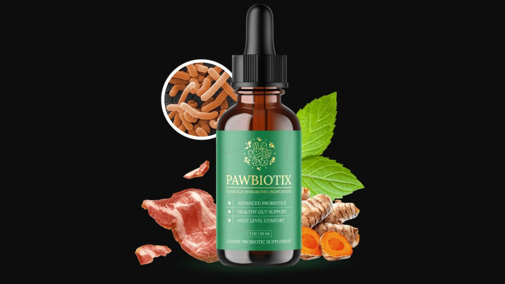

I investigated Pawbiotix's canine probiotic formula against the published veterinary research. Here's what the science says and what dog owners actually report.

Pawbiotix stands out in the crowded dog supplement market for one reason: it uses clinically studied probiotic strains specifically selected for canine gut health — not human strains reformulated for dogs — in a liquid format that delivers active bacteria intact to the intestines. The gut microbiome connection to dog health is well-established in veterinary research: coat quality, energy levels, immune function, digestion, and even behavior all trace back to gut bacterial balance. For dogs dealing with digestive issues, dull coat, low energy, or skin problems that don't resolve, Pawbiotix addresses the root cause rather than the symptoms.
⚡ Ready to try Pawbiotix?
→ Visit Official Website NowOfficial site · Money-back guarantee · Secure checkoutSpore-forming probiotic that produces digestive enzymes and competitively excludes harmful bacteria from the gut. Particularly effective for canine digestive efficiency and stool quality improvement. Heat-stable spore formation ensures survival through the digestive tract to the intestines.
The most researched probiotic strain for gut barrier integrity and immune modulation. Published veterinary research shows L. Rhamnosus reduces intestinal permeability — the 'leaky gut' mechanism that drives systemic inflammation and the skin, coat, and immune issues that follow.
Produces lactase enzyme for improved dairy tolerance and broad digestive enzyme support. Reduces gas, bloating, and loose stool through improved carbohydrate fermentation. One of the most established strains for canine digestive health improvement.
Reduces cortisol-driven gut inflammation and supports the gut-brain axis in dogs — the pathway connecting gut microbiome health to anxiety, reactivity, and behavioral stability. Dogs with higher B. Longum populations show measurably lower stress hormone responses.
Broad-spectrum digestive support and immune modulation. Supports balanced immune response — reducing both the overreactive immune behavior behind allergies and the underreactive response behind chronic infections.
"My 6-year-old Golden had been struggling with loose stools and dull coat for two years. Two weeks on Pawbiotix and the stool quality improved dramatically. By month two her coat was the shiniest it's been since she was a puppy. My vet asked what I changed."
"Our Lab had chronic skin issues that three different vets couldn't resolve. Started Pawbiotix on a friend's recommendation. Within six weeks the scratching reduced by about 80%. I wish I'd known about gut health years ago."
"Our rescue came with significant anxiety and digestive issues. Pawbiotix addressed both — the gut-brain axis connection is real. Calmer dog, better digestion, shinier coat. Three months in and it's become non-negotiable in our routine."
Dog Probiotics · Canine Gut Health · Liquid Formula · Money-Back Guarantee
→ Visit Official Pawbiotix WebsiteAvailable in: US, Canada, Australia, UK, New Zealand, Ireland.
Money-Back Guarantee · Official Site Only
→ Get Pawbiotix at the Official PriceAffiliate Disclosure: This review contains affiliate links. We may earn a commission at no additional cost to you. See our Affiliate Disclosure. Not evaluated by the FDA. Not intended to diagnose, treat, cure, or prevent any disease. Results may vary.